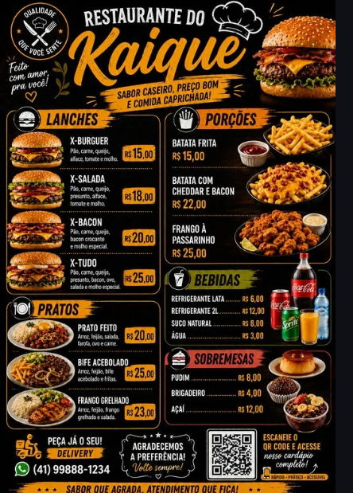

Ciência
A ciência envolve a produção de conhecimentos por meio da investigação, da observação, da análise e da busca por explicações sobre diferentes fenômenos.

Colégio Estadual Professor Gabriel Rosa
Ciência, tecnologia e sociedade: conhecimentos que ajudam a compreender e transformar o mundo.
A Tecnociência refere-se à estreita relação entre ciência e tecnologia na sociedade contemporânea. O desenvolvimento científico contribui para a criação de novas tecnologias, enquanto as tecnologias também possibilitam novas formas de produzir conhecimentos científicos.
Essa relação pode ser observada em diferentes áreas da sociedade, como comunicação, saúde, transporte, produção industrial, energia, educação e diversas outras atividades presentes no cotidiano.
Estudar Tecnociência significa também refletir sobre as transformações provocadas pela ciência e pela tecnologia, considerando suas possibilidades, seus benefícios, seus desafios e suas consequências para a sociedade e para o meio ambiente.
A ciência envolve a produção de conhecimentos por meio da investigação, da observação, da análise e da busca por explicações sobre diferentes fenômenos.
A tecnologia envolve conhecimentos, técnicas, ferramentas e processos utilizados para criar produtos, desenvolver soluções e atender a diferentes necessidades da sociedade.
A sociedade participa da produção e utilização das tecnologias e também é transformada pelos seus efeitos, possibilidades e desafios.
Entre as experiências desenvolvidas no projeto Ciêntificando com IFAS está o IFA - Física e Tecnociência, realizado com a orientação da professora Cristina, na área de Tecnociência, tendo como tema Acessibilidade para a Visão.
O produto final do trimestre teve como objetivo a divulgação, no site, de publicações relacionadas à acessibilidade para pessoas cegas ou com baixa visão, articulando conhecimentos de tecnologia, programação, óptica e inclusão.
Ao longo do trimestre, os estudantes da 2ª Série C e da 2ª Série D desenvolveram atividades voltadas à identificação de necessidades do cotidiano e à elaboração de soluções tecnológicas acessíveis.
Como parte das atividades, os estudantes foram convidados a elaborar um infográfico sobre de que forma a popularização dos smartphones, especialmente aqueles equipados com câmeras de maior resolução, pode contribuir para a acessibilidade de pessoas cegas ou com baixa visão.
A proposta possibilitou refletir sobre o uso da tecnologia como ferramenta de inclusão e autonomia.
Também foi desenvolvido um mapa conceitual sobre as aplicações da óptica nos diferentes contextos da sociedade, contemplando os ambientes residencial, comercial, escolar e industrial.
Como produto prático, os estudantes desenvolveram a proposta QR Code – Cardápio Acessível. A atividade consistiu na criação de um cardápio digital acessível, utilizando o QR Code como recurso tecnológico para facilitar o acesso às informações por meio do celular.
Organizados em equipes, os estudantes planejaram e desenvolveram uma solução considerando princípios de acessibilidade, praticidade e inclusão, aplicando conhecimentos de programação e tecnologia.
Durante o desenvolvimento das atividades, foram estimuladas competências como criatividade, pensamento computacional, autonomia, resolução de problemas, pesquisa e trabalho colaborativo.
Dessa forma, o produto final possibilitou integrar tecnologia, programação, óptica e acessibilidade, demonstrando como os conhecimentos desenvolvidos em sala de aula podem ser utilizados na criação de soluções que contribuam para uma sociedade mais inclusiva e acessível.
Confira alguns registros dos trabalhos e das atividades desenvolvidas pelos estudantes durante o projeto de Física e Tecnociência.
As imagens apresentam a produção dos infográficos, mapas conceituais, desenvolvimento das propostas e elaboração do QR Code – Cardápio Acessível.





O desenvolvimento das atividades de Física e Tecnociência possibilitou aos estudantes participar de um processo de aprendizagem baseado na pesquisa, na investigação e na resolução de problemas.
O trabalho em grupo também contribuiu para desenvolver a colaboração, a comunicação, a organização e a responsabilidade na realização das atividades.
A experiência demonstra que o conhecimento científico pode ser construído de maneira significativa quando os estudantes são envolvidos na investigação e na produção de soluções para situações presentes em seu contexto.